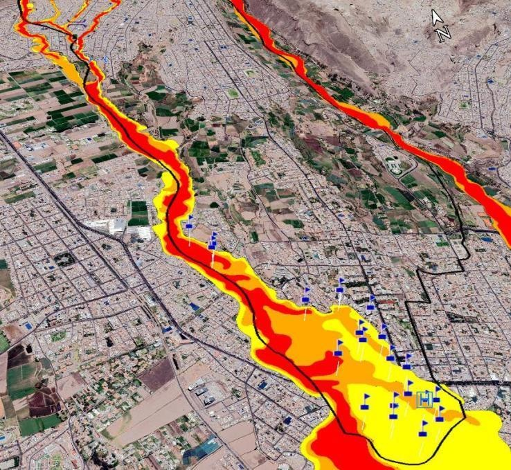
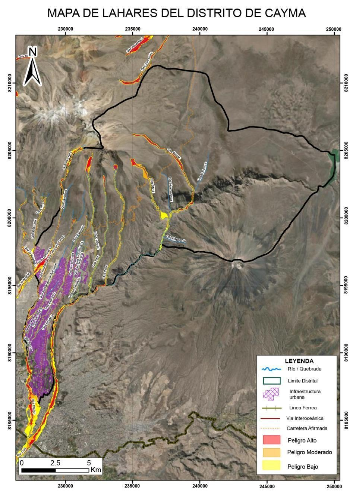

El amarillo muestra el contorno aproximado del terreno que podría alcanzar el flujo según la simulación de INGEMMET de 2022. Su extensión varía a lo largo del recorrido. El color agrupa las tres categorías del estudio: peligro bajo, moderado y alto.
La figura 58 identifica Chullo y muestra el resultado en perspectiva. Para ubicar el contorno se utilizó la cuadrícula UTM del anexo 4 en la página 67 del PDF. Se trazó el borde exterior de la mancha visible en el segmento legible junto al tramo ANA de Cayma, con una escala de unos 28 m por píxel. Los cortes de cobertura indican hasta dónde se digitalizó. La vista descuenta el corredor rojo y naranja del amarillo para distinguir las capas.
La lectura corresponde a sectores. La posición exacta del borde puede variar por resolución, rótulos y diferencias entre fuentes. Fuera de la mancha la seguridad del predio sigue sin evaluarse. El uso del suelo se consulta por separado en el PDM. El visor cruza los contornos detectados por YOLO con las tres zonas dentro de la imagen analizada. Si un contorno toca más de una, prevalece rojo, luego naranja y por último amarillo.
Descargar el trazado referencial y sus metadatos (GeoJSON)

